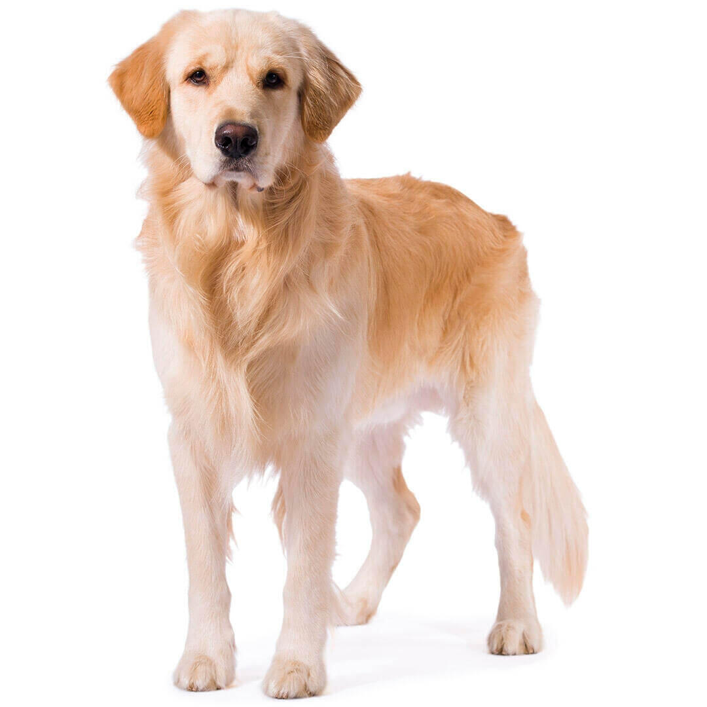

Los golden retriever es una raza de perro cobrador que se desarollo alrededor de 1850 en el Reino Unido, concretamente en Escocia. Con sus caracteristicas de perro cobrador, sabueso, bloodhound y spaniel de agua, es un habil perro de caza con aptitudes para el rastreo
El temperamento que tienen son: Amigables, inteligentes, Amables y confiables
Famoso por su pelaje dorado y brillante de longitud media, el Golden Retriever grande tiene una expresión amistosa y una simetría perfecta. Se desplaza con un pasos largos y fuertes en un movimiento fluido y soberbio. Los machos adultos miden entre 56 y 61 cm y pesan de 30 a 34 kg. Las hembras adultas miden entre 51 y 56 cm y pesan de 27 a 32 kg.
El Golden Retriever es un perro amable y equilibrado que suele adaptarse bien a la vida en familia. Le encanta participar en todas las actividades, ya sean dentro o fuera de casa. Por encima de todo, es un perro cobrador, así que intentará arrastrar, tirar o llevarse todo lo que le quepa en la boca. También le encanta el agua, por lo que deberás estar atento a su seguridad cuando esté cerca de ella. No hay que olvidar que los golden son muy sensibles; de modo que debe llevarse mucho cuidado al adiestrarlos para no perder la sensibilidad en ningún momento.
Sir Dudley Marjoribanks (Lord Tweedmouth) tenía afición por el color dorado de los perros cobradores y adquirió a un perro llamado Nous en Brighton (Inglaterra) en 1865 para cruzarlo con una perra tweed water spaniel, que era una cobradora de color marrón. Después de 20 años de cría en los que se incluyeron labrador retrievers, setters rojos y, posiblemente, uno o dos perros para mejorar la capacidad olfativa y la masa ósea, se desarrolló el Golden Retriever, En 1908 empezó a ser registrado y exhibido con el nombre de Golden de pelo liso. En 1913, su clasificación pasó a ser la de retriever dorado o amarillo y, finalmente, en 1920, tomó el nombre con el que lo conocemos hoy.
